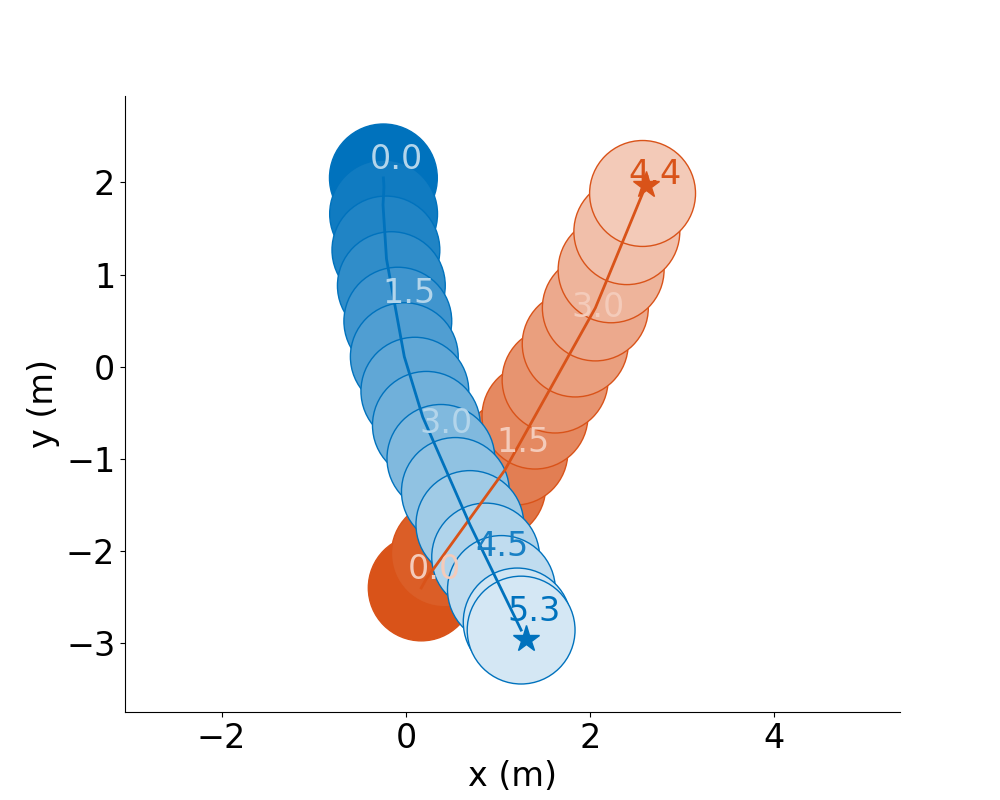
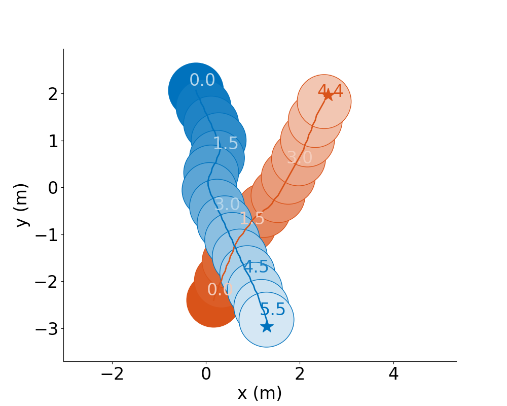
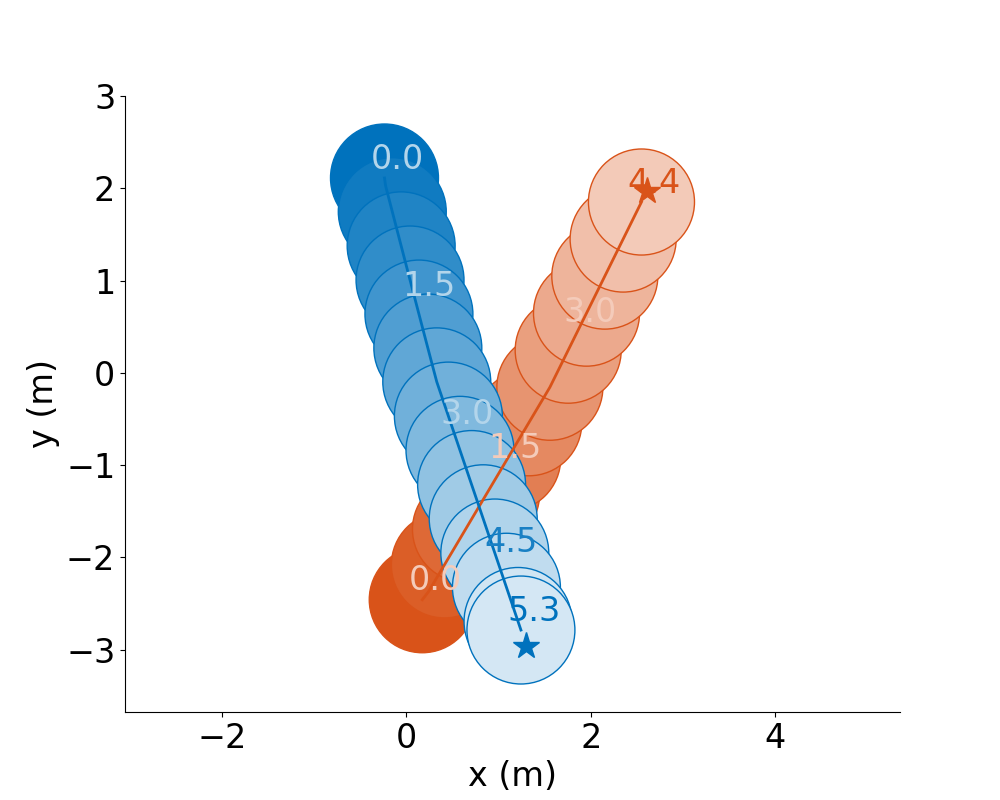
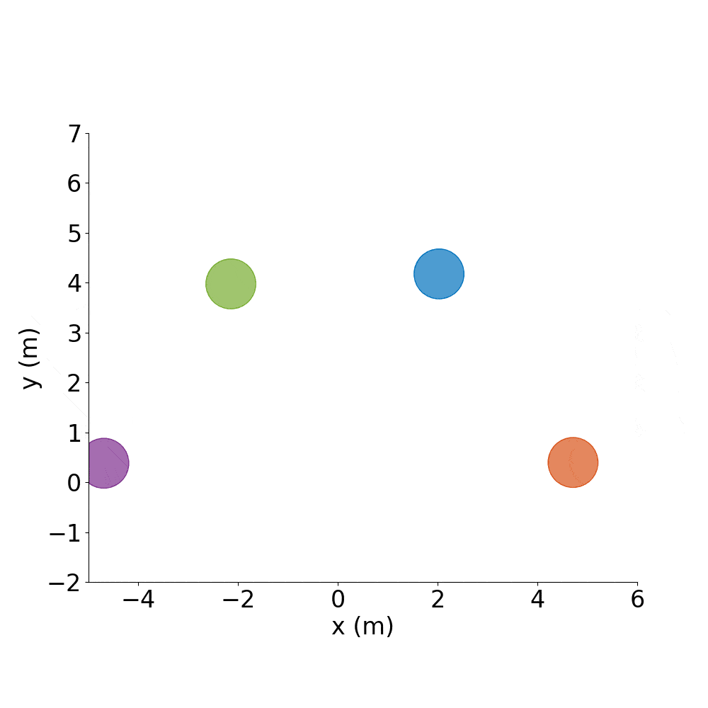
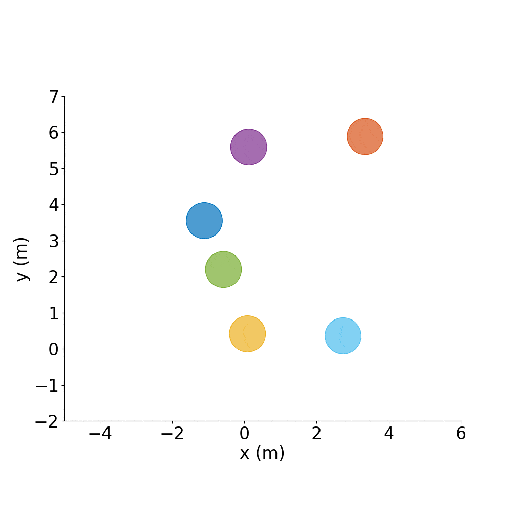

Compare a new policy to the baselines¶
Background¶
You may have your own collision avoidance policy implemented for another simulator. You can add a small wrapper around your policy so that it can be used by Agents in this environment.
To easily make comparisons between algorithms, this repo provides several model-based and learning-based approaches, pre-defined test scenarios, and data collection scripts.
Instructions¶
Create a new
InternalPolicysub-class (can useNonCooperativePolicyas an example)If necessary, add a submodule containing your helper methods that were written for some other environment (we use a
Python-RVO2submodule, for example)Implement the
find_next_actionmethod of your new policyImport your new policy at the top of
test_cases.pyand add it to thepolicy_dict(e.g., add'new_policy': NewPolicy)
Add an element to the dict in
env_utils.pycorresponding to your new policy (e.g.,'new_policy_name': {'policy': 'new_policy', 'sensors': ['other_agents_states_sensor']})In
config.py, add an element toself.POLICIES_TO_TESTwith your new policy’s name,'new_policy_name'In
config.py, updateself.NUM_AGENTS_TO_TESTandself.NUM_TEST_CASES, if desired
Run the test case script, which will run the same NUM_TEST_CASES scenarios for each policy in POLICIES_TO_TEST, for each number of agents in NUM_AGENTS_TO_TEST:
./gym_collision_avoidance/experiments/run_full_test_suite.sh
These will a .png for each trajectory on each test cases in experiments/results/full_test_suites, and, if desired, a pandas DataFrame with statistics about the results.
For example:

CADRL |

GA3C-CADRL |

RVO |
Optional: Load Network Weights¶
If your new InternalPolicy should load network weights, you can simply hard-code the path in the init method.
Or, you can add to your new policy something like the initialize_network method in GA3CCADRLPolicy. This allows you to have a default path to model weights, but also lets you pass in a specific path if you want to load a different one. This is why in env_utils.py some policies have these dict entries:
'checkpt_dir': '/path/to/run-20200403_144424-3eoowzko/checkpoints/',
'checkpt_name': 'network_01900000',
which are passed to the policy by calling agent.policy.initialize_network(**kwargs). An example of this is in run_full_test_suite.py reset function.
Train a new RL policy¶
Background¶
So far, all the policies discussed in this document are pre-trained/defined, and the Environment queries those policies to compute an action from an observation.
However, RL training scripts already have a mechanism for computing an action from an observation. Moreover, the RL algorithm will modify its action-selection rule throughout training, as the policy is updated or exploration hyperparameters change.
Therefore, the CollisionAvoidanceEnv has a mechanism to accept actions from an external process and apply those to specific agents, while still keeping the agents whose policies are pre-defined totally internal to the environment.
The external process (e.g., RL training script) can pass a dict of actions – keyed by the index of the Agent should take that action – as an argument to the env.step command.
You can distinguish Agents who should follow the action dict vs. query their own Policy by assigning the appropriate Policy sub-class to each Agent.
Agents whose actions come from an external process should be given an ExternalPolicy.
Since the RL algorithm might not be aware of the Env-specific actions (e.g., if RL returns a discrete \(\texttt{external_action}\in\{0,1,2,3\}\), it still must be converted to a vehicle speed command for this environment), the external_action from the actions dict is sent through action = ExternalPolicy.external_action_to_action(external_action).
We further specify a LearningPolicy as a subclass of ExternalPolicy, as this enables us to include a flag in the observation vector of whether or not this agent is_learning.
There may be some Agents in the environment with an ExternalPolicy (say, a real robot), but aren’t actively learning, so the RL algorithm may want to know to ignore those agents’ observations.
Instructions¶
Create a new
LearningPolicysub-class (can useLearningPolicyGA3Cas an example).Implement the
external_action_to_actionmethod of your new policyImport your new policy at the top of
test_cases.pyand add it to thepolicy_dict(e.g., add'new_policy': NewPolicy)
Decide what should go in the observation vector (can choose from components of
self.STATE_INFO_DICTinconfig.pyor add your own) and other default environment settings, such as whether you want to plot each episode, simulation timestep length, etc.Create a sub-class of
config.pyand overwrite the default attributes ofConfigif you’d like. For example to change the observation vector but keep everything else:from gym_collision_avoidance.envs.config import Config as EnvConfig class Train(EnvConfig): def __init__(self): self.STATES_IN_OBS = ['is_learning', 'num_other_agents', 'dist_to_goal', 'heading_ego_frame', 'pref_speed', 'radius', 'other_agents_states_encoded'] EnvConfig.__init__(self)
I highly recommend starting by training a single RL agent. It is possible to receive multiple agents’ observations/rewards and send in multiple actions from your RL script, but that requires a little more work. So add this line as well:
... EnvConfig.__init__(self) self.TRAIN_SINGLE_AGENT = True
In your training script, before creating an instance of the environment, set the environment variables that point to your new config:
import os os.environ['GYM_CONFIG_CLASS'] = 'Train' # If your new config class is not in config.py, set this: os.environ['GYM_CONFIG_PATH'] = 'path_to_file_containing_your_new_config_class'
Decide which scenarios to train on: by default, it will be random test cases with agents whose policies follow a random distribution of static, non-cooperative, learning-ga3c. Instead, it would be best to start with 2-agent scenarios, where one agent uses your
'new_policy'the other uses RVO. In your custom config, update the test case args:... self.MAX_NUM_AGENTS_IN_ENVIRONMENT = 2 self.MAX_NUM_AGENTS_TO_SIM = 2 EnvConfig.__init__(self) self.TEST_CASE_ARGS['num_agents'] = 2 self.TEST_CASE_ARGS['policy_to_ensure'] = 'new_policy' self.TEST_CASE_ARGS['policies'] = ['new_policy', 'RVO']
Initialize the environment and start doing RL!
from gym_collision_avoidance.experiments.src.env_utils import create_env # env: a VecEnv wrapper around the CollisionAvoidanceEnv # one_env: an actual CollisionAvoidanceEnv class (the unwrapped version of the first env in the VecEnv) env, one_env = create_env() obs = env.reset() for i in range(num_episodes): actions = {} rl_action = model.sample(obs) actions[0] = rl_action # No need to supply actions for non-learning agents # Run a simulation step (check for collisions, move sim agents) obs, reward, game_over, which_agents_done = env.step([actions]) # Do RL stuff with the (obs, rl_action, reward)...
If you get to a point where your RL agent has learned something pretty good, you may want to create an
InternalPolicywhere you load pre-trained model parameters – see Compare a new policy to the baselines for how to do this. This is a great way to share your good policy back to the community, who might just want to use your policy without re-training or interfacing with any RL code.Note: If you do this, you’ll want to name the associated internal policy something different than the external policy you used for RL training. So far, the convention has been: train with LearningPolicyAlg, evaluate with AlgPolicy.
If you want to train using observations of multiple learning agents in parallel, please see Train a Multiagent RL Policy or the RL Collision Avoidance repo for our GA3C-CADRL policy.
Collect a dataset of trajectories¶
Background¶
Collecting realistic trajectory data on dynamic agents is difficult and often time-intensive.
The two typical approaches are:
Set up a camera and collect video of people moving (requires post-processing to extract trajectories)
Set up a simulation of agents and extract their trajectories (requires realistic motion models)
Many of the packages we’ve experimented with that implement pedestrian motion models do not produce particularly interactive behavior, but the GA3C-CADRL, CADRL, and RVO agents in this repo typically do yield some interesting multi-agent interactions.
Thus, collecting a dataset of trajectories using this repo could help with making more realistic predictions about how agents might respond to various actions by another agent, without requiring real human data. If nothing else, the simulated trajectories can be designed to help debug and initially test your prediction code.
Instructions¶
./gym_collision_avoidance/experiments/run_trajectory_dataset_creator.sh
This will store png files of the trajectories and a .pkl file of relevant data from the trajectories in the experiments/results/trajectory_dataset folder.
The resulting dataset could be used to train predictive models, initialize an RL agent’s policy, etc.
You can change the test_case_fn to use different scenarios, the policies dict to give agents different policies, etc.
Formation Control¶
Background¶
Say you have a good policy and want to make it spell letters or make interesting shapes, rather than just do random test cases all day.
Instructions¶
Spell out CADRL, with agents starting where they ended the previous episode:
./gym_collision_avoidance/experiments/run_cadrl_formations.sh
This will save plots and animations of 10 letters (.gif and .mp4) format in gym_collision_avoidance/experiments/results/cadrl_formations.
For example:

C |

A |